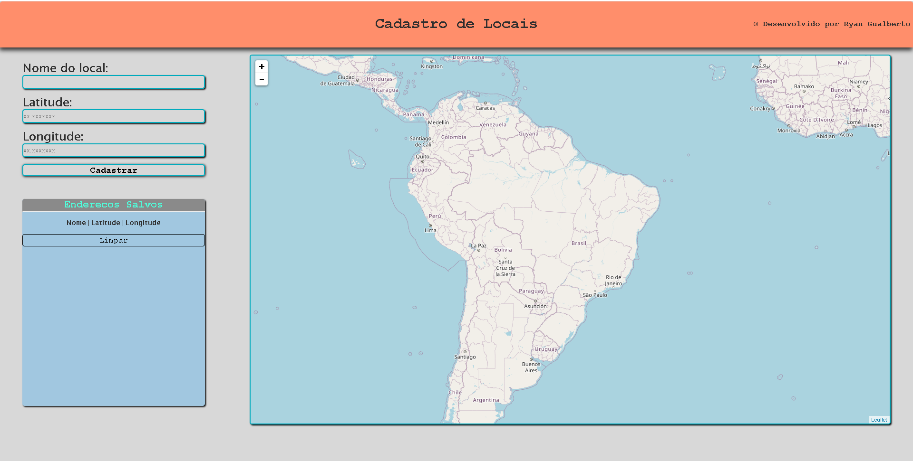
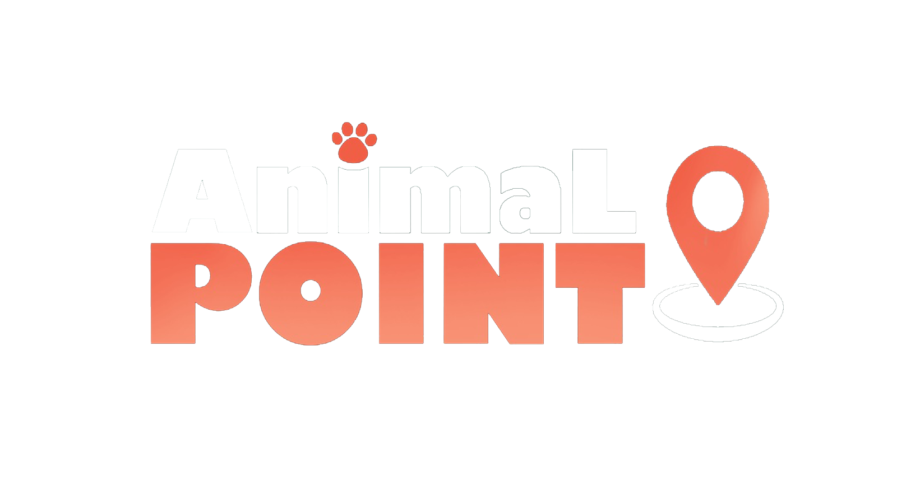
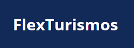

Flapy bird
um mini-game Flapy-bird Desenvolvido com JavaScript e Bootstrap, Disponível apenas para Smartphones

Cadastro de Localizações
uma página web, na qual é possível cadastrar lozalizações através de latitude e longitude, o sistema busca o local, armazena na lista de endereços, e adiciona um marcador no mapa, Feito com HTML, CSS e JS, Disponível para qualquer dispositivos
Portal Academico PHP
Meu portal Academico, no qual realizei diversas atividades, durante o aprendizado da linguagem
Site Animal Point
Site Estático, do projeto animal Point, Desenvolvido com HTML, CSS e JS
Landing Page Flex Turismos
Landing Page de uma empresa fictcia chamada flex Turismos, projeto Desenvolvido com HTML e CSS durante o bootcamp Santander 2022
Landing Page Login Instagram
Landing Page de uma empresa fictcia chamada flex Turismos, projeto Desenvolvido com HTML e CSS durante o bootcamp Santander 2022